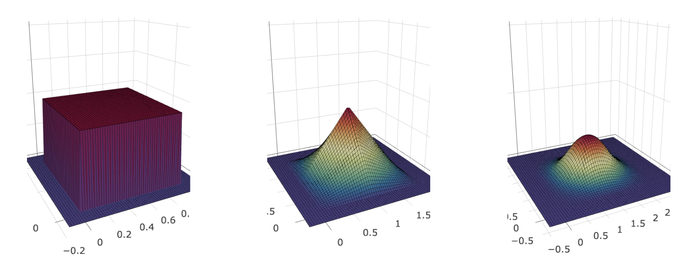
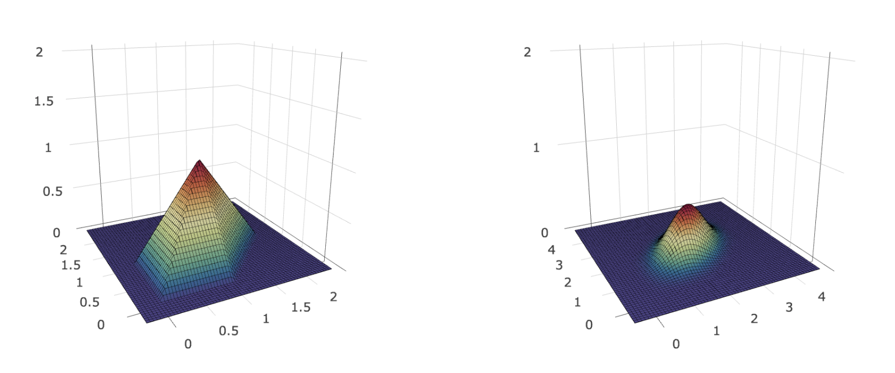

Efficient Evaluation of
Arbitrary Box-Splines
This brief report aims to study the differences in runtime performance of box-spline evaluation codes. Different problem sizes and compilers are used to isolate the effects of varying memory management styles across three different Fortran implementations of arbitrary box-spline evaluation.
Box-Spline Definitions
A box spline in \(\mathbb{R}^s\) is defined by its direction vector set \(A\), composed of \(n\) \(s\)-vectors where \(n \geq s\). Further, \(A\) will be written as a \(s \times n\) matrix. The first \(m\) column vectors of \(A\) are denoted by \(A_m\), \(m \leq n\). \(A_s\) is required to be nonsingular. Consider the unit cube in \(n\) dimensions \(Q_n = [0,1)^n\). \(A_n \bigl( Q_n \bigr)\) is now the image (in \(s\) dimensions) of \(Q_n\) under the linear map \(A_n\). This image is the support of the box spline defined by \(A_n\) in \(s\) dimensions. The box spline function in \(s\) dimensions for \(A_s\) is defined as
$$ B(x \mid A_s) = \begin{cases}
(\det(A_s))^{-1}, & x \in A_s(Q_s), \\
0, & \text{otherwise.}
\end{cases} $$
For \(A_n\) when \(n > s\) the box spline is computed as
$$ B(x \mid A_n) = \int_0^1 B(x - t v_n \mid A_{n-1}) dt, $$
where \(v_n\) is the \(n\)th direction vector of \(A\).
Evaluating Arbitrary Box-Splines
The naive recursive implementation of a box-spline evaluation algorithm is straight forward to implement and has a computational complexity of
$$ \mathcal{O} \bigg(2^{n - s} \frac{n!}{s!}\bigg),$$
however a naive implementation suffers from numerical instability near the boundaries of the polynomial pieces that compose a box-spline . The numerical instability near boundaries of polynomial pieces can be avoided through postponing the translation of points by direction vectors . A numerically consistent implementation written in Matlab is provided by . The computational complexity is reduced for box-splines with repeated direction vectors to
$$\mathcal{O} \bigg( 2^{n-s} \frac{k!}{s!} k^{n-k} \bigg),$$
where \(k \leq n\) is the number of unique direction vectors. also attempts to reduce redundant computations by precomputing all normal vectors defining the boundaries of polynomial pieces with a memory complexity of \(\mathcal{O} \big( 2^k \big)\).
A Fortran implementation of the numerically consistent arbitrary box-spline algorithm is considered here. This implementation does not precompute normal vectors, reducing the memory complexity to \(\mathcal{O}\bigl(s k (n - k) \bigr)\). An analysis of three different Fortran implementations follows.
Experiment Setup
Nearly all combinations of the following variables are considered.
| Variable | Values |
| | |
| Element | TenP, Cour, ZP |
| Number of Evaluation Points | 1, 2K, 4K |
| Element Multiplicity | 1, 2, 3, 4, 5 |
| Compiler (Computer) | gfortran (Navajo), sun95 (Navajo), ifort (Pima) |
| Optimization Flag | None, O2, O3, Os |
| Box-Spine Version | dynamic, automatic, allocate |
Each test is repeated 20 times to capture a corresponding distribution of expected evaluation time. The Fortran intrinsic function CPU_TIME is used to time the evaluation of each box-spline. In total 21,600 experiments were conducted. The variable element refers to the following two-dimensional direction vector sets with associated multiplicities listed as exponents.
Tensor Product B-Spline (TenP)
$$ \begin{pmatrix}
1 & 0 \\ 0 & 1
\end{pmatrix}^{(1,2,3,4,5)} $$

Courant Element (Cour)
$$ \begin{pmatrix}
1 & 0 & 1 \\ 0 & 1 & 1
\end{pmatrix}^{(1,2,3)} $$

Zwart-Powell (ZP)
$$ \begin{pmatrix}
1 & 0 & 1 & 1 \\ 0 & 1 & -1 & 1
\end{pmatrix}^{(1,2)} $$

Different Box-Spline Implementations
Dynamic
Memory allocation is mostly local to subroutines, dynamic allocation is required in order for subroutines to construct their own work arrays of appropriate size.
Allocate
Memory allocation is entirely performed (with the exception of constants) during the top-level entry routine BOXSPLEV. No internal routines allocate their own memory, rather they use appropriate slices of initially allocated memory. All allocation sizes are computed at runtime and allocation is performed with the ALLOCATE intrinsic.
Automatic
Same as "Allocate", but all of the allocation sizes are expressed in terms of input arrays and are automatically allocated upon entering the top-level subroutine BOXSPLEV.
Aggregate Results
First, let's consider the selection of which optimization flag to use when evaluating box-splines. The plot below depicts the aggregate CDFs of all experiment runtimes broken down by compiler and optimization flag.
Note that the Sun compiler does not appear to be affected by (cannot find?) differing optimization levels. The GNU compiler suffers the worst performance under no optimization. Generally, O3 appears to provide reasonably good (or the best) performance for both ifort and gfortran.
Next we consider the performance of the three different box-spline codes using the best optimization on single point evaluation and evaluation at a large number of points.
For single-point evaluation, the automatic allocation scheme with the ifort compiler produces results most quickly. The dynamic allocation scheme takes more time likely due to the dominating effect of subroutine calls (and allocations) during computation. This effect will likely be observed for any number of points small enough to fit into cache (\(<2^{10}\)).
For the most compute-intense experiments, Zwart-Powell multiplicity 2, Courant multiplicity 3 with 4K points, the dynamic allocation scheme with the gfortran compiler provides the best results. The global allocation scheme takes more time for all compilers when there are enough points to fill cache (\(>2^{10}\)).
A Note
The automatic and allocate codes took advantage of a few extra optimizations (other than memory management) not had by dynamic. Pending the future use of the dynamic framework, those extra optimizations can be included to improve single-point evaluation performance.
Profiling Results
In addition to the large batch test, gprof was used to analyze the performance of the dynamic gfortran code as well as the allocate gfortran code.
Table Legend
The upcoming tables have the following columns.
time (%) -- the percentage of the total running time of the program used by this function.
cumulative seconds -- a running sum of the number of seconds accounted for by this function and those listed above it.
self seconds -- the number of seconds accounted for by this function alone. This is the major sort for this listing.
calls -- the number of times this function was invoked, if this function is profiled, else blank.
self ms/call -- the average number of milliseconds spent in this function per call, if this function is profiled, else blank.
total ms/call -- the average number of milliseconds spent in this function and its descendents per call, if this function is profiled, else blank.
name -- the name of the function. This is the minor sort for this listing.
Flat Profile for Dynamic Allocate (ZP element, multiplicity 2, 1 point)
| time (%) | cumulative seconds | self seconds | calls | self ms/call | total ms/call | name |
| | | | | | | |
| 40.01 | 0.06 | 0.06 | 1 | 60.01 | 150.03 | evaluate_box_spline | |
| 26.67 | 0.10 | 0.04 | 249032 | 0.00 | 0.00 | nonzero | |
| 20.00 | 0.13 | 0.03 | 69120 | 0.00 | 0.00 | matrix_det | |
| 13.34 | 0.15 | 0.02 | 138240 | 0.00 | 0.00 | matrix_orthogonal | |
| 0.00 | 0.15 | 0.00 | 41672 | 0.00 | 0.00 | matrix_rank | |
| 0.00 | 0.15 | 0.00 | 30153 | 0.00 | 0.00 | matrix_minimum_norm | |
| 0.00 | 0.15 | 0.00 | 1 | 0.00 | 0.00 | allocate_max_lapack_work | |
| 0.00 | 0.15 | 0.00 | 1 | 0.00 | 150.03 | boxsplev | |
| 0.00 | 0.15 | 0.00 | 1 | 0.00 | 0.00 | matrix_condition_inv | |
Flat Profile for Manual Allocate (ZP element, multiplicity 2, 1 point)
| time (%) | cumulative seconds | self seconds | calls | self ms/call | total ms/call | name |
| | | | | | | |
| 60.01 | 0.09 | 0.09 | 1 | 90.01 | 150.02 | evaluate_box_spline | |
| 26.67 | 0.13 | 0.04 | 110792 | 0.00 | 0.00 | pack_dvecs | |
| 6.67 | 0.14 | 0.01 | 138240 | 0.00 | 0.00 | compute_orthogonal | |
| 6.67 | 0.15 | 0.01 | 69120 | 0.00 | 0.00 | matrix_det | |
| 0.00 | 0.15 | 0.00 | 41672 | 0.00 | 0.00 | matrix_rank | |
| 0.00 | 0.15 | 0.00 | 30153 | 0.00 | 0.00 | make_dvecs_min_norm | |
| 0.00 | 0.15 | 0.00 | 1 | 0.00 | 150.02 | boxsplev | |
| 0.00 | 0.15 | 0.00 | 1 | 0.00 | 0.00 | matrix_condition_inv | |
| 0.00 | 0.15 | 0.00 | 1 | 0.00 | 0.00 | reserve_memory | |
The two tables above show that roughly ~25% of the evaluation time is spent managing memory (subroutines NONZERO and PACK_DVECS have similar function). Notice how that behavior changes once there are 4000 points instead of 1, see below.
Flat Profile for Dynamic Allocate (ZP element, multiplicity 2, 4K points)
| time (%) | cumulative seconds | self seconds | calls | self ms/call | total ms/call | name |
| | | | | | | |
| 99.53 | 22.16 | 22.16 | 1 | 22.16 | 22.27 | evaluate_box_spline |
| 0.22 | 22.21 | 0.05 | 249032 | 0.00 | 0.00 | nonzero |
| 0.13 | 22.24 | 0.03 | 138240 | 0.00 | 0.00 | matrix_orthogonal |
| 0.09 | 22.26 | 0.02 | 41672 | 0.00 | 0.00 | matrix_rank |
| 0.04 | 22.27 | 0.01 | 69120 | 0.00 | 0.00 | matrix_det |
| 0.00 | 22.27 | 0.00 | 30153 | 0.00 | 0.00 | matrix_minimum_norm |
| 0.00 | 22.27 | 0.00 | 1 | 0.00 | 0.00 | allocate_max_lapack_work |
| 0.00 | 22.27 | 0.00 | 1 | 0.00 | 22.27 | boxsplev |
| 0.00 | 22.27 | 0.00 | 1 | 0.00 | 0.00 | matrix_condition_inv |
Flat Profile for Manual Allocate (ZP element, multiplicity 2, 4K points)
| time (%) | cumulative seconds | self seconds | calls | self ms/call | total ms/call | name |
| | | | | | | |
| 99.86 | 31.04 | 31.04 | 1 | 31.04 | 31.09 | evaluate_box_spline | |
| 0.10 | 31.07 | 0.03 | 138240 | 0.00 | 0.00 | compute_orthogonal | |
| 0.03 | 31.08 | 0.01 | 110792 | 0.00 | 0.00 | pack_dvecs | |
| 0.03 | 31.09 | 0.01 | 30153 | 0.00 | 0.00 | make_dvecs_min_norm | |
| 0.00 | 31.09 | 0.00 | 69120 | 0.00 | 0.00 | matrix_det | |
| 0.00 | 31.09 | 0.00 | 41672 | 0.00 | 0.00 | matrix_rank | |
| 0.00 | 31.09 | 0.00 | 1 | 0.00 | 31.09 | boxsplev | |
| 0.00 | 31.09 | 0.00 | 1 | 0.00 | 0.00 | matrix_condition_inv | |
| 0.00 | 31.09 | 0.00 | 1 | 0.00 | 0.00 | reserve_memory | |
These two tables show that the vast majority of computation time is spent within the EVALUATE_BOX_SPLINE routine computing the base case (majority) and processing the results in the non base cases (minority).